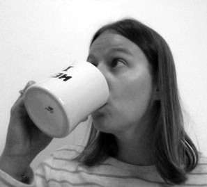

I’m Jillian. I’m a graphic designer, an educator, an author, and the co-founder of Emspace, an online resource for graphic designers.
I began this project back in September of 2013 to stimulate some creativity among a handful of other objectives (see objectives section below). To keep myself honest, I created this blog to display my results.
On Dec, 20 2013, I had drawn 100 ampersands in 100 days. After that I took a short break and then made a few more totaling 127 unique ampersands. I hope to add a few more as the spirit hits me, but in the meantime, I’ve been keeping myself busy with new inspiration projects.
Rules
I created a set of rules to follow:
- Each day I will post a new ampersand drawing by 11:59am CST.
- Each image will be 375 pixels on its longest dimension and will be centered in a 600 x 600 pixel canvas.
- Each design will be only one color. (black)
- All variations on the basic idea of the ampersand (“and”) are allowed.
- Iterations on old ideas are ok
(I think it is important to improve by editing existing ideas with a fresh eye, though I will do my best to come up with as many varied ideas as possible) - Perfect vectors are not everything.
(Though I pride myself on wielding the pen tool with a surgeons precision when necessary, perfect commercial vectoring is not really the big picture here. Forcing myself to create something new every day is.) - It is okay to experiment with software tools and brushes.
(Though I don’t usually advocate for these things, the point is experimentation and play so in this particular application, I’m giving myself permission to use them.) - It is okay to look.
(I’ve decided it is okay to peruse examples. However, I vow to never save an example image or use it for direct reference. Additionally, I vow to never study any one example to carefully, and instead look at dozens at a time to avoid too much influence).
Why’d I do this? Side projects are important for designers, they keep life interesting. Why this particular side project? There are lots of good reasons, I call them objectives and I’ve outlined them below:
Objectives
- Stimulate some creativity (as stated above)
- Explore hand-drawn letterform first-hand
- Gain more appreciation for typography in general
- Learn admiration of even the smallest details
- Create a meaningful distraction from my web design projects
- Sharpen my pen tool skills
- Explore font creation software
- Get to know the WordPress platform a little better*
- Add a little needed structure to my life
Thanks for stopping by.
May you shall enjoy,
Jillian
*note: I’m using a super-simplified version of the twentythirteen theme. I’ve barely touched any of the defaults except to remove most of the distraction and stuff I don’t need. I make mention of this because I have given myself permission to focus on the content of the blog rather than the design of the blog (see objectives section bullet five for details).